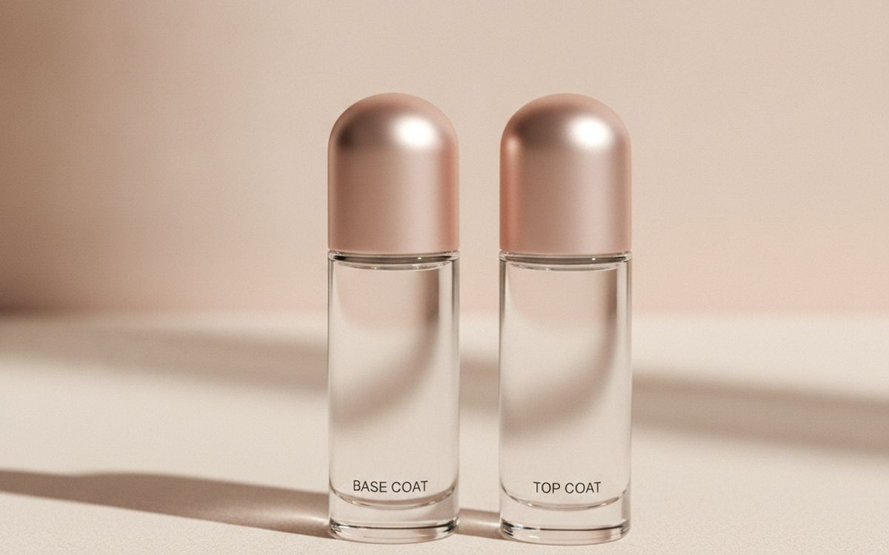
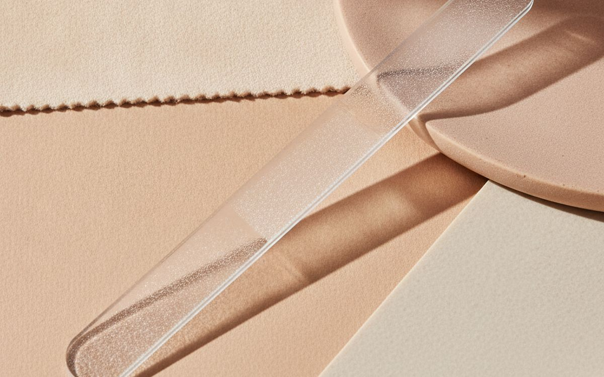
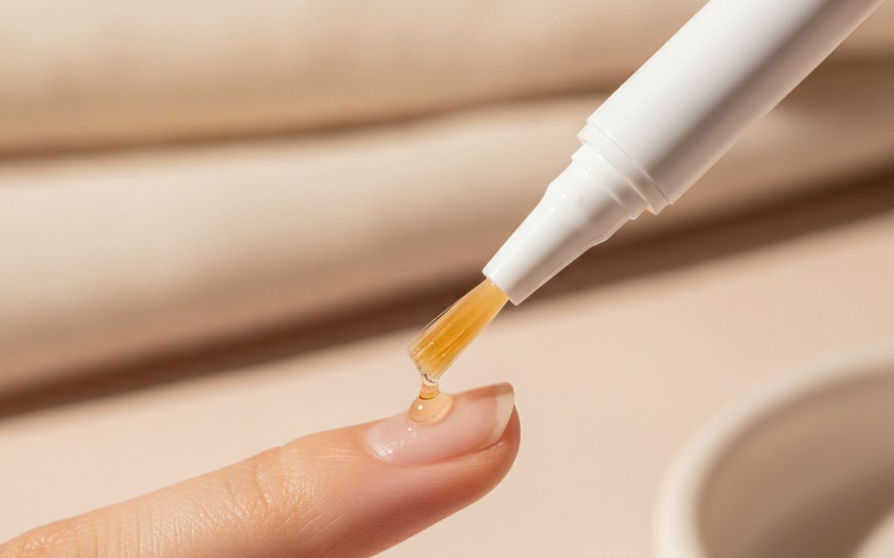
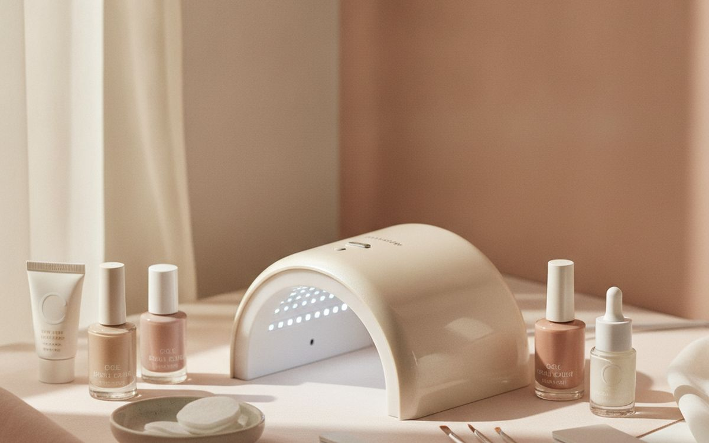
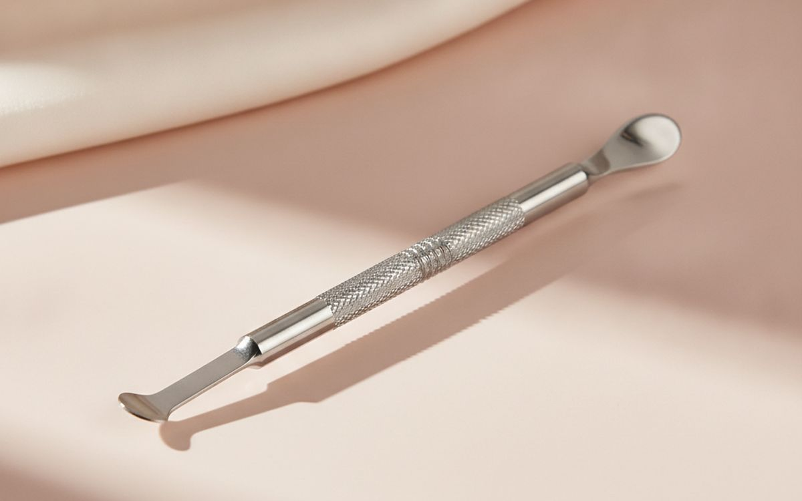
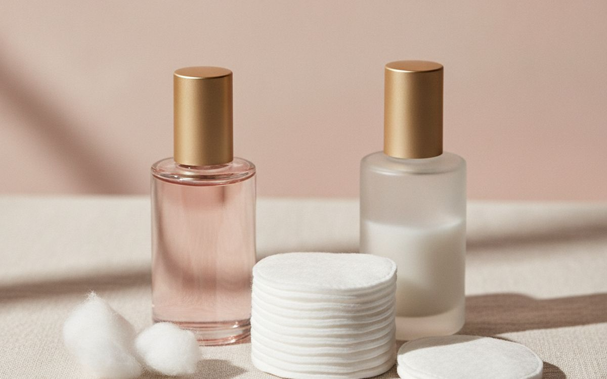
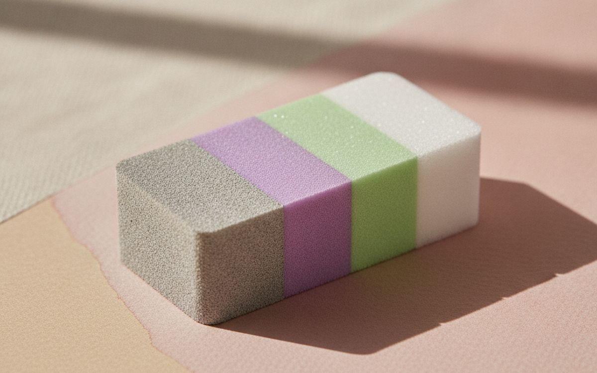
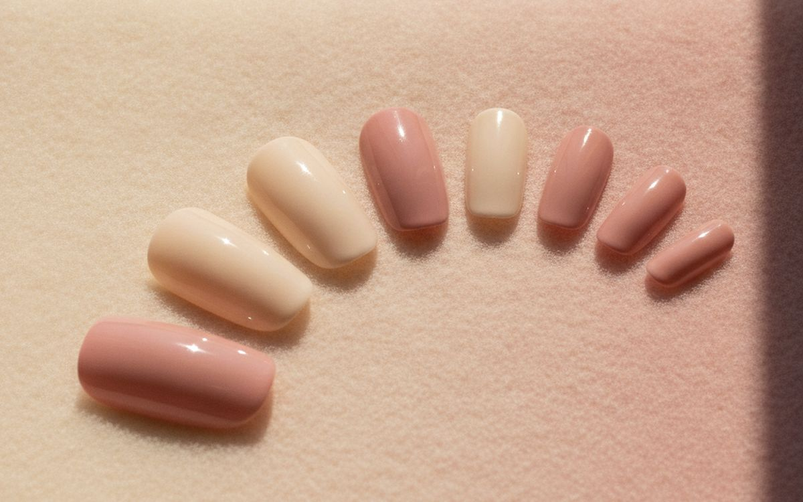
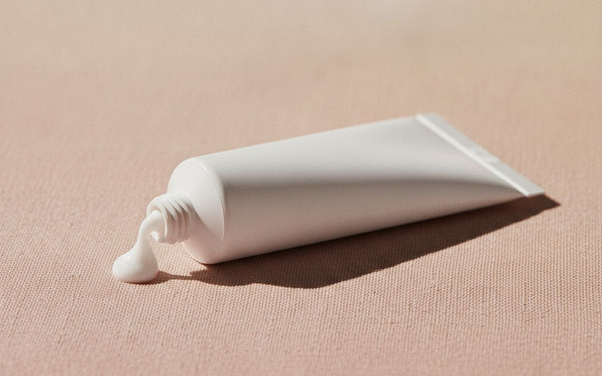
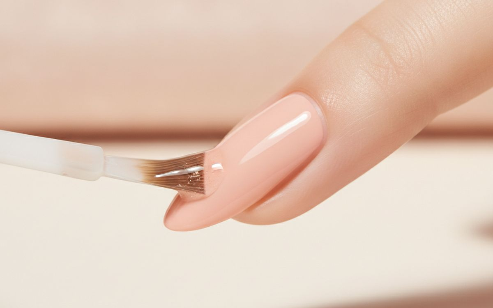

Home manicures chip in two days for predictable reasons: oily nail plates, no base coat, thick layers, and a cheap top coat. Salon manicures last longer mostly because of prep and technique, not magic products. With a few good tools, a home manicure can last a week, or two to three weeks with gel.
This list is ordered by how much each item helps a manicure last and look neat. Prep tools and coats come first; colours are last because they matter least for wear.
Prices below are approximate street prices at the time of writing and move around constantly, especially during sale events. Treat them as a rough band for budgeting, not a quote. Always check the live listing before you buy.
Kurz gesagt
A good base coat and quick-dry top coat
The pair that makes polish last
Hinweis. Die Links auf dieser Seite sind Affiliate-Links. Wenn Sie darüber kaufen, erhalten wir unter Umständen eine Provision ohne Mehrkosten für Sie. Das beeinflusst weder die Auswahl noch die Reihenfolge dieser Liste.
Wie wir ausgewählt haben
These picks come from dermatologist and nail technician guidance, beauty communities and long-run owner reports, cross-checked against current retail listings. We have not personally tested every item here. Some people develop allergies to gel products; avoid getting gel on skin, and stop if irritation appears.
Auf einen Blick
Die Preise sind Näherungswerte zum Zeitpunkt der Erstellung und ändern sich häufig.
Die Empfehlungen

01 · The pair that makes polish lastA good base coat and quick-dry top coat
A base coat helps polish grip the nail and protects against staining. A good top coat seals the colour, adds shine and resists chips. These two bottles do more for wear than the colour itself. Seche Vite and similar quick-dry top coats are long-time favourites. Wipe nails with alcohol before the base coat to remove oils. Reapply top coat every two to three days. The case for it: doubles wear time, prevents staining, and adds shine. The trade-off is real: quick-dry top coats can thicken in the bottle and needs reapplying every few days, so weigh that against how often it would actually get used.
$12-25Der Kompromiss: Quick-dry top coats can thicken in the bottle
Warum es hier steht
- Doubles wear time
- Prevents staining
- Adds shine
Gut zu wissen
- Quick-dry top coats can thicken in the bottle
- Needs reapplying every few days

02 · Smooth edges without splittingA glass nail file
Rough emery boards tear the nail edge, which leads to peeling and splitting. A glass file seals the edge smoothly and lasts for years. File in one direction rather than sawing back and forth. It is a small change with a big result for weak nails. The case for it: smooth, sealed edges, reduces splitting, and lasts years. The trade-off is real: can break if dropped and filing takes a little longer, so weigh that against how often it would actually get used. For $8-15, it is a small, low-risk addition to the list rather than a centrepiece purchase you need to think hard about.
$8-15Der Kompromiss: Can break if dropped
Warum es hier steht
- Smooth, sealed edges
- Reduces splitting
- Lasts years
Gut zu wissen
- Can break if dropped
- Filing takes a little longer

03 · Healthy nails and cuticlesCuticle oil
Dry cuticles crack and peel, and dry nails split. A drop of cuticle oil daily keeps both soft and flexible, and makes a manicure look fresher. Pen applicators are easy to carry. Jojoba-based oils absorb well. The case for it: healthier nails, neater cuticles, and refreshes old manicures. The trade-off is real: only works if used regularly and oil on nails before polishing hurts wear, so weigh that against how often it would actually get used. Priced around $8-15, it is easy to justify even if it only ends up getting occasional rather than daily use.
$8-15Der Kompromiss: Only works if used regularly
Warum es hier steht
- Healthier nails
- Neater cuticles
- Refreshes old manicures
Gut zu wissen
- Only works if used regularly
- Oil on nails before polishing hurts wear

04 · Two-week manicuresAn at-home gel kit with LED lamp
Gel polish hardens under an LED lamp and lasts two to three weeks without chipping. Home kits are much cheaper than salon visits over time. Take care: keep gel off the skin to avoid allergies, and remove it properly by soaking in acetone rather than peeling, which damages nails. Buy gels from known brands. The case for it: lasts two to three weeks, cheaper than salons over time, and glossy finish. The trade-off is real: removal takes time and acetone and gel allergies can develop, so weigh that against how often it would actually get used.
$40-80Der Kompromiss: Removal takes time and acetone
Warum es hier steht
- Lasts two to three weeks
- Cheaper than salons over time
- Glossy finish
Gut zu wissen
- Removal takes time and acetone
- Gel allergies can develop

05 · Neat, clean shapesA cuticle pusher
Gently pushing back cuticles makes nails look longer and neater and gives polish a clean edge. A stainless steel or wooden pusher does it; avoid cutting cuticles, which can lead to infection. Push after a shower when skin is soft. The case for it: neater nail shape, clean polish edge, and cheap. The trade-off is real: can damage nails if too forceful and do not cut cuticles, so weigh that against how often it would actually get used. For $5-12, it is a small, low-risk addition to the list rather than a centrepiece purchase you need to think hard about.
$5-12Der Kompromiss: Can damage nails if too forceful
Warum es hier steht
- Neater nail shape
- Clean polish edge
- Cheap
Gut zu wissen
- Can damage nails if too forceful
- Do not cut cuticles

06 · Removing polish properlyAcetone-free and acetone removers
Acetone-free remover is gentler for regular polish. Pure acetone is needed for glitter and gel. Keep both. Follow with hand cream or cuticle oil, because removers dry the skin. The case for it: removes polish cleanly, needed for gel, and cheap. The trade-off is real: acetone dries skin and flammable; store safely, so weigh that against how often it would actually get used. Priced around $6-12, it is easy to justify even if it only ends up getting occasional rather than daily use. None of that makes it essential for everyone reading this, only worth knowing about if the description above matches how you actually use the space.
$6-12Der Kompromiss: Acetone dries skin
Warum es hier steht
- Removes polish cleanly
- Needed for gel
- Cheap
Gut zu wissen
- Acetone dries skin
- Flammable; store safely

07 · Smooth surfacesA four-sided buffer block
A buffer smooths ridges so polish goes on evenly, or gives a natural shine without polish. Use gently and rarely; over-buffing thins nails. The case for it: smooth surface for polish, natural shine, and cheap. The trade-off is real: over-buffing thins nails and wears out, so weigh that against how often it would actually get used. At $5-10, it earns its place on this list without asking for a big up-front commitment either way. As with anything on this list, check the exact listing details and current price before adding it to a cart.
$5-10Der Kompromiss: Over-buffing thins nails
Warum es hier steht
- Smooth surface for polish
- Natural shine
- Cheap
Gut zu wissen
- Over-buffing thins nails
- Wears out

08 · Instant resultsPress-on nails
Modern press-on nails look far better than they used to and last a week or more with good glue. Great for events and for people who cannot paint neatly. Reusable if applied with adhesive tabs. The case for it: instant salon look, many styles, and reusable with tabs. The trade-off is real: glue can damage nails if pulled off and sizing takes care, so weigh that against how often it would actually get used. For $8-20, it is a small, low-risk addition to the list rather than a centrepiece purchase you need to think hard about.
$8-20Der Kompromiss: Glue can damage nails if pulled off
Warum es hier steht
- Instant salon look
- Many styles
- Reusable with tabs
Gut zu wissen
- Glue can damage nails if pulled off
- Sizing takes care

09 · Soft handsHand cream
Nails look better on soft, moisturised hands. A non-greasy hand cream after washing, especially in winter, keeps skin from cracking. Keep one at the sink and one in a bag. The case for it: soft hands, prevents cracking, and cheap. The trade-off is real: greasy formulas transfer to screens and scented ones can irritate, so weigh that against how often it would actually get used. Priced around $8-20, it is easy to justify even if it only ends up getting occasional rather than daily use. None of that makes it essential for everyone reading this, only worth knowing about if the description above matches how you actually use the space.
$8-20Der Kompromiss: Greasy formulas transfer to screens
Warum es hier steht
- Soft hands
- Prevents cracking
- Cheap
Gut zu wissen
- Greasy formulas transfer to screens
- Scented ones can irritate

10 · Neat polish linesA clean-up brush
A small angled brush dipped in remover cleans polish from skin around the nail, giving a sharp, salon-like edge. An old lip brush works too. The case for it: salon-neat edges, cheap, and fixes mistakes. The trade-off is real: takes a steady hand and remover ruins some brushes, so weigh that against how often it would actually get used. At $5-10, it earns its place on this list without asking for a big up-front commitment either way. As with anything on this list, check the exact listing details and current price before adding it to a cart.
$5-10Der Kompromiss: Takes a steady hand
Warum es hier steht
- Salon-neat edges
- Cheap
- Fixes mistakes
Gut zu wissen
- Takes a steady hand
- Remover ruins some brushes
Häufige Fragen
How do I make nail polish last longer?
Clean nails with alcohol, use a base coat, thin layers and a top coat, and reapply top coat every few days.
Are at-home gel kits safe?
Generally, if used carefully. Keep gel off skin and remove with acetone, not by peeling.
Should I cut my cuticles?
No. Push them back gently instead.
How do I stop nails splitting?
Use a glass file, cuticle oil daily and wear gloves for washing up.
Angebote heute
Sieh, was gerade reduziert ist.
Angebote →← Alle Ratgeber
Als AliExpress-Affiliate verdienen wir an qualifizierten Käufen. Preise und Verfügbarkeit entsprechen dem Stand der Veröffentlichung und können sich ändern.